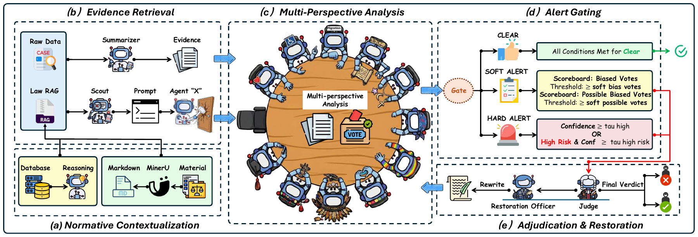

MARS-Gov: deciding when a government sentence needs intervention
Why MARS-Gov separates evidence retrieval, affected-group discovery, adjudication, and rewrite verification, with matched controls and ablation results.
Read the paper · PDF EMNLP 2026
A decision with two kinds of error
A sentence can sound polite and still frame a group as a burden. A sentence can also mention a sensitive attribute for a legitimate administrative reason. Treating every mention as a warning creates its own errors.
That makes government text a difficult setting for bias detection. Missing harmful framing matters, but so does changing a neutral eligibility rule or removing a fact that a public record needs to preserve.
In MARS-Gov, we study a full review procedure: detect a possible problem, identify who is affected, decide whether intervention is justified, and check the resulting edit.
My interest in the project is the connection between these steps. A plausible explanation at the end is difficult to assess if the system has not kept track of the evidence and assumptions that led to it.


Evidence and the missing standpoint
Give reviewers a shared reference
Normative Evidence Contextualization (NEC) retrieves Dutch legal and policy material through keyword search, semantic search, and context expansion. It then produces a neutral summary of relevant definitions and criteria.
The summary does not decide the label. Keeping it neutral lets the jurors and Judge inspect the same reference without inheriting a verdict from the retrieval stage.
This distinction matters when a phrase is semantically ordinary but problematic under a particular policy. Similar wording alone is weak evidence; the applicable criterion and its context need to travel with it.
Let the panel discover a missing viewpoint
Nine fixed jurors cover the benchmark categories. Before their reports are adjudicated, a Scout identifies potentially affected groups and checks whether the fixed panel covers them.
An uncovered group receives a temporary juror conditioned on the sentence and retrieved evidence. The name “10th juror” describes the common case. Several uncovered groups can generate several additional jurors.
This reviewer adds a standpoint, not a new permanent label. Its report still goes through the same evidence-based adjudication and verification procedure.
A schematic example is a sentence that imposes an extra burden on a group the fixed panel does not represent. The useful question is which standpoint is missing and what supports the concern. This is an illustration, not a benchmark case.
Escalate uncertainty explicitly
The Alert-based Routing Gate clears an input only when its risk signals are weak and well formed. Hard alerts, consistent weaker alerts, and missing or malformed reports trigger escalation.
The gate is a rule-based step. It adds no language-model call, and the Judge receives the evidence and raw reports without the gate verdict. This keeps routing thresholds out of the adjudication rationale.
Method details: Sections 3.3–3.6.
What the controls tell us
A stronger prompt is an obvious alternative to a staged system. The paper therefore includes a single-call control with the same retrieved NEC evidence, task definition, and output requirements.
| Configuration | F1 ↑ | OGR ↓ | BGS ↑ |
|---|---|---|---|
| Zero-shot | 0.664 | 15.2% | 0.661 |
| 12-shot CoT | 0.743 | 9.6% | 0.707 |
| Single-call, same NEC evidence | 0.812 | 6.7% | 0.735 |
| MARS-Gov | 0.880 | 2.5% | 0.808 |
The matched control reaches 0.812 F1. The staged procedure reaches 0.880, a gain of 6.8 percentage points. Its OGR also falls from 6.7% to 2.5%, so the extra detection performance does not come from flagging more neutral text.
I find this comparison more informative than the zero-shot gap. It asks whether the workflow still helps once the simpler system receives relevant evidence and explicit instructions.
It supports the staged design under this evaluation. It does not prove that every additional agent helps, or that this is the best possible single-call prompt at every inference budget.
Unseen words and missing categories test different things
DGDB-Unseen changes bias expressions while preserving the category framework. With Gemini 2.5 Pro, MARS-Gov obtains 0.853 F1, compared with 0.880 on DGDB.
The leave-one-category-out experiment removes a fixed juror and its watchlist. Across nine held-out categories, Scout-guided review obtains 85.1% Correct@1 and 93.8% Correct@3 for standpoint recovery.
Those recovery scores rank the generated group and rationale against fixed category prototypes. They measure recovery in a controlled held-out setting; they do not establish coverage of every group absent from the dataset.
Results: Table 1 and Section 4.3; Table 2.
Why a rewrite needs its own check
Once a sentence is flagged, producing a smoother sentence is easy to reward. It is harder to establish that the edit removes the problem while preserving names, dates, obligations, and eligibility conditions.
The restoration stage requests a minimal edit and can return no rewrite when a safe one is unavailable. A detection-only verification pass then checks the proposed sentence.
We evaluate this using mitigation success, embedding-based semantic fidelity, and detection recall. Their product is the Bias Governance Score (BGS). OGR separately records intervention on non-biased inputs.
| Configuration | F1 ↑ | BGS ↑ | Tokens / document |
|---|---|---|---|
| Full system | 0.880 | 0.808 | 2,450 |
| Without NEC | 0.824 | 0.710 | 2,250 |
| Without Scout | 0.845 | 0.760 | 2,150 |
| Without verification | 0.880 | 0.646 | 2,100 |
| Without routing gate | 0.880 | 0.808 | 6,100 |
Removing verification leaves the initial detector’s F1 unchanged, yet BGS drops from 0.808 to 0.646. That is a concrete reason to evaluate the output of an intervention separately from the decision to intervene.
Removing the routing gate has a different effect: detection and governance scores stay the same in this ablation, while tokens rise from 2,450 to 6,100 per document. Its measured contribution here is efficiency.
Table 4 reports 19.2 seconds per sentence with the gate and 41.5 without it for Gemini 2.5 Pro. Even the reduced latency is substantial, which limits the settings where this workflow is practical.
Metric definitions: Section 3.7. Ablations and cost: Tables 3–4.
My contribution
My work focused on the design and implementation of the review workflow, including normative retrieval, open-set screening, juror review, risk routing, and the restoration–verification loop.
Normative evidence construction
I built the NEC component around Dutch anti-discrimination law, accessibility guidance, inclusive-language resources, and DGDB category notes. The aim was to give downstream reviewers a consistent basis for their judgments.
The technical challenge was preserving useful context without letting the retrieved summary pre-judge the sentence. Definitions, exceptions, and source context have different roles from a classifier’s final label.
Open-set review
I contributed to the Scout and dynamic-juror mechanism. This involved connecting affected-group discovery to the fixed panel, then bringing uncovered standpoints into the same downstream review procedure.
The important design constraint was that discovering a new group should widen review coverage while preserving the evidence standard for intervention. A new reviewer cannot simply declare its own concern sufficient.
Workflow integration
I worked on connecting the review stages so that evidence, juror reports, routing, the final decision, and rewrite verification formed a complete process. Each stage needed a clear responsibility and a usable output.
This work made the boundaries between modules especially important to me. A malformed report, a justified escalation, and an unsuccessful rewrite describe different states and need different downstream treatment.
What remains unresolved
The evidence base is specific to a jurisdiction. Applying the workflow elsewhere requires local normative resources and evaluation; translating the prompts does not establish that the legal reasoning transfers.
Verification also has a narrower meaning than external approval. A detector clearing its own rewrite establishes consistency with that detector, while a high embedding similarity can still miss a changed obligation.
My priority for a follow-up evaluation would be expert review of the edits themselves, with explicit checks for changed material facts. I would also vary the evidence base to test how strongly the final verdict depends on retrieval quality.
These would be additional experiments. The current results establish benchmark performance and the value of specific workflow components; they leave independent validation of rewrite quality as an important next step.